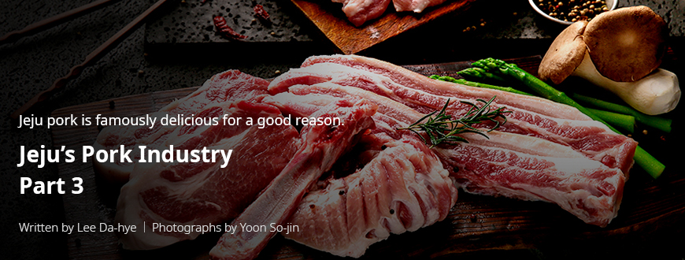
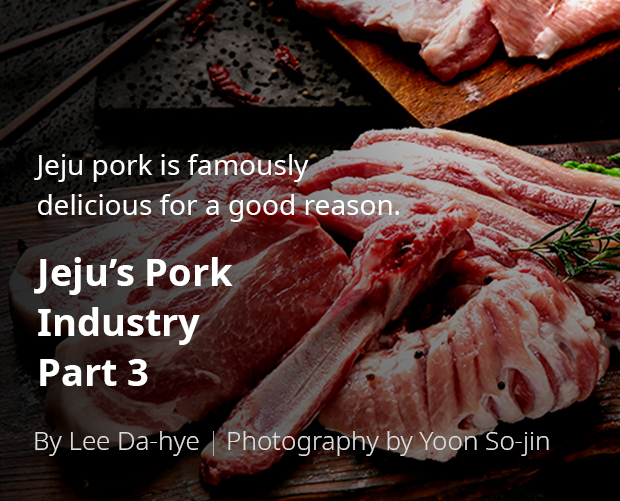
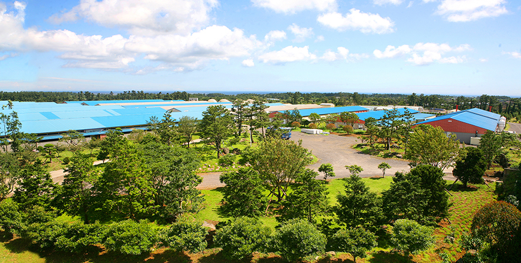
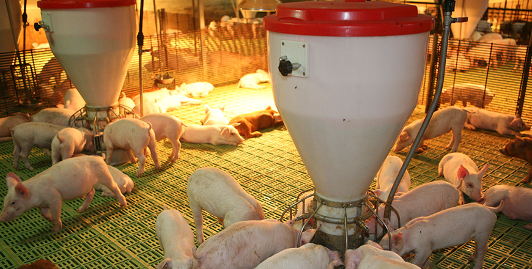

기획취재콘텐츠
- Home
- 제주라이프
- 기획취재콘텐츠
Jeju pork is famously delicious for a good reason. Jeju’s Pork Industry Part 3새로운 글



If you want to see what an advanced pork industry looks like, look no further than the Jeju Dongbu Livestock Farmers Cooperative.
Smart pig sheds, eco-friendly farming with natural-circulation, a leader in the senary industry—these are some of the phrases that come to mind when describing the Jeju Donbgu Livestock Farmers Cooperative (Representative Kim Tae-wu). Founded in January 1997, the Jeju Donbgu Livestock Farmers Cooperative is currently the largest pig ranch in Jeju, as it grows 21,000 pigs on a 115,700 m2 wide area.

- A full view of the Jeju Donbgu Livestock Farmers Cooperative,
with trees planted around the pig shed to create an orchard-like scenery
It's a traditional pork dish that you can't miss at a Jeju dinner. ⓒJeju Donbgu Livestock Farmers -
with trees planted around the pig shed to create an orchard-like scenery
It's a traditional pork dish that you can't miss at a Jeju dinner. ⓒJeju Donbgu Livestock Farmers -
The Jeju Donbgu Livestock Farmers Cooperative knows that the taste and quality of pork are just as much affected by its growth environment and animal feeds as the quality of breeding pigs. Having considered the necessary factors, the cooperative is committed to securing high-quality feeds and building good growth environments. The cooperative only uses eco-friendly feeds made from nonantibiotic-certified ingredients and grass. It also keeps the environment pleasant for the pigs, as it keeps the growth density low. The cooperative also creates a green environment around the ranch by planting a tree for every pig that was raised in the facility. These efforts earned the Jeju Donbgu Livestock Farmers Cooperative a HACCP certification and an eco-friendly livestock farm designation in 2009. In July 2013, the cooperative acquired an eco-friendly agricultural product certification (nonantibiotic livestock product).
In 2017, the cooperative built a smart pig shed system that produces high-quality pork while improving the economic feasibility of its businesses. The Jeju Donbgu Livestock Farmers Cooperative has adopted three facilities to date: the environment control system, an automatic feeding system for lactating sows, and a cooling system. The environment control system indicates the humidity and temperature within the shed and sends an alert to the user’s smartphone if the humidity and temperature far exceed the optimal range. The automatic feeding system automatically supplies feeds to lactating sows (mother pigs) when they press a button. Users of the system can check on the physical status of the sows by observing their feeding behaviors. The cooperative also installed a cooling system to prevent the pigs from dying from heat during

- An interior view of the pig shed; the cooperative developed a high-quality growth environment for pigs and installed a smart feeding system. ⓒJeju Donbgu Livestock Farmers -
The smart systems made it easier to identify pigs and sheds in need of intensive care, resulting in the reduced time required for management. We were able to invest the remaining time and energy in quality control, which resulted in a decline in mortality rate and an increase in the pigs’ weight. Overall, our productivity has increased.
- Hyun Jin-hyeob, Deputy Department Head, Jeju Dongbu Livestock Farmers Cooperative
The smart systems facilitated growth environment management, raising the MSY (marketed-pigs per sow per year) by 0.3–0.5. In 2019, the cooperative released 36,300 pigs and reported 22 MSY, far exceeding the Korean average of 17.9 MSY.
The Jeju Donbgu Livestock Farmers Cooperative plans to install a high-speed fermentation system for animal carcasses and compost as well as an animal feed measurement system. The six-month commissioning of the high-speed fermentation system was recently completed. The feed measurement system will allow the cooperative to collect data on the pigs’ animal feed intakes and use the data to control their specifications.
The cooperative strives to lead the senary industrialization of the pig industry with these smart pork production systems. Jeju Montrak is a Jeju pork restaurant chain codeveloped with the Jeju Donbgu Livestock Farmers Cooperative. The chain has 20 stores in Seoul, Gyeonggi-do, Chungcheongbuk-do, and Jeollanam-do.
- Jeju Montrak offers fermented roast pork that uses the restaurant’s own unique technologies. ⓒJeju Montrak -
Jeju Montrak uses its unique technologies to ferment high-quality Jeju pork produced by the Jeju Donbgu Livestock Farmers Cooperative. All pork is supplied directly from farms run by the cooperative, and it never fails to satisfy customers with its consistent quality and superb taste. The cooperative also sells processed pork products, such as pork jerkies and handmade sausages, at its own stores and online marketplaces. The jerkies and sausages have gained positive reactions from consumers for their savory taste.
The Jeju Donbgu Livestock Farmers Cooperative is expanding its investments in the production of high-quality and competitive pork products. The cooperative trains pork distribution experts through capacity-building programs facilitated by professional organizations, such as the Agricultural Food Distribution Training Center. It also spares no investment in advancing pork production technologies, including visits to leading pork production sites and the adoption of new technologies and products. The cooperative is also looking for ways to introduce Jeju pork to other countries by arranging meetings with buyers and attending food expos outside of Korea.
Pork Industry Supports Jeju and Spreads Word Across the World
In January 2020, Tamline, a farmers cooperative/pork distributor in Jeju (CEO Ko Deok-hun), signed an export contract for Jeju pork with the Fengda Group in Hong Kong. Tamline will export pork equal to 400 heads (30 t) each month for the next 5 years, starting in March 2020. The total export volume is estimated at 1,800 t, and the total worth is at KRW 24 billion. The export deal is an achievement made possible by the high-quality pork produced in Jeju’s farms, distributors doing active overseas marketing, and the full support by the Jeju government.
The pork industry is a primary industry conducive to value-adding initiatives. It can branch out as a secondary or a third industry. The industry is less affected by seasons, which means we can secure a stable flow of production. The industry also has an effect on other related industries, such as animal feeds, genetics, and veterinary medicine. The Jeju government will continue to provide full support to raise the competitiveness of its pork industry and promote shared growth.
- Kim Gyeong-jin, Team Leader, Livestock Division, Jeju Special Self-Governing Province
The government provides full support for the improvement of production technologies and the facilitation of pork distribution. As part of its convergent information and communication technology (ICT) efforts, the government is currently developing a system capable of adjusting animal density, disposing wastes, and managing growth environments to maintain the appropriate number of livestock. The government also plans to build an animal waste transfer system to foster a sustainable pork industry that grows with the local communities.
Furthermore, the government grants JQ certifications to high-quality pork produced in pollution-free areas to build reliable and clean Jeju pork brands. JQ stands for Jeju Quality Certification Mark, which is a certification scheme where the Jeju Governor grants products produced in Jeju or those who source ingredients from the island to use the JQ mark. The government also adopted the FCG Quality Certification Scheme for the production management of pollution-free and clean livestock products. An FCG certification is only granted if the producer is found to pose no problem in its production and distribution processes, including operating capabilities, external credibility, growth facilities, breeding pigs, production technologies, hygiene, and release conditions.
Jeju pigs have long been a part of the island’s tradition, culture, and lifestyle. Today, Jeju’s farmers, cooperatives, related institutions (including the LPA), and the government are working together to build a pork industry that supports the Jeju economy and promotes the island across the world.